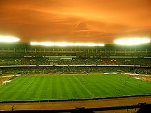

|
|
Sports venues, Markets and malls
Eden Gardens Cricket Stadium
Eden Gardens is one of only two 100,000 seater amphitheatres for the game of cricket (the other being Melbourne Cricket Ground). It was initially an extension of the Maidan under the supervision of Governor General Lord Auckland, and looked after by the Eden sisters of the Auckland family. The gardens house a transported Burmese pagoda of exquisite design. The pavilion was built in 1871 and the 1st first class match played in the season of 1911-12. It has since hosted many international Test matches, one day matches and tournaments, including the final of the Cricket World Cup in 1987. Its exalted status in cricketing history comes from the lush outfield, stellar performances (like V.V.S. Laxman's 281), and not least the intense crowd support. The stadium has a history of crowd violence - involving riots in the stands in 1967 (when the stadium burnt), 1996 and 1999.

Salt Lake Stadium, second largest stadium in the world
Yuva Bharati Krirangan, also called the Salt Lake Stadium, is a 122,000 - strong amphitheatre used for soccer matches and concerts. It is purposely not a home stadium for any soccer team. It hosted the bulk of the 3rd South Asian Federation Games in Kolkata in 1987.
Netaji Indoor Stadium
The Netaji Indoor Stadium, adjacent to the Eden Gardens, is a 120,000 seater air-conditioned indoor stadium, having hosted internationally significant events like the state funeral of Mother Teresa in 1997. Constructed in 1975 to host the World Table Tennis Championships, it also has the Kshudiram Anusilani Kendra - a smaller auditorium without gallery facilities for training purposes.
The Calcutta Cricket and Football Club
The Calcutta Cricket and Football Club (originally the Calcutta Cricket Club) is the second oldest cricket club in the world, after the Marylebone Cricket Club. Founded in 1792 as the Calcutta Cricket Club, it merged later with the Calcutta Football Club (founded 1872) to become the Calcutta Cricket and Football Club, and is located on Gurusaday Dutta Road. It has arguably the most picturesque cricket ground in Kolkata. Recent evidence in the form of an article in Hickey's Bengal Gazette, suggests the club existed in 1780 - which would make it the oldest cricket club in the world.
South City Mall Interior

South City Mall
New Market is Kolkata's historic shopping district. Opened in 1874, it was named Hogg Market after the commissioner Sir Stuart Hogg. The beautiful fountain and benches at the market no longer exist, but the popularity of the market has not waned, and the beautiful gothic clock tower recalls the British heritage of the market. It was renamed New Market after Independence. New Market led the way for Christmas and New Year festivities with confectionery shops like Nahoum's putting up a special spread. The market is organized on the basis of merchandize. It burnt down partially in 1985 but has been restored and expanded with a new building which houses very famous Kashmir Handicraft store-Pumposh.
The Park Street, Camac Street and Shakespeare Sarani are considered to be a high street of Kolkata with many commercial establishments & high end shopping destinations, with lots of shopping malls, boutiques, restaurants and stand alone retail outlets.[5] Gariahat and Shyambazar are two shopping districts catering mostly to the middle class and lower middle class of Kolkata. College Street is an area famous for its bookstores.
Kolkata has seen a spurt of shopping malls with the rise of the buying power of the Kolkata populace. Shopping arcades like Forum Mall and Emami Shoppers' City in Central Calcutta have brought international brands from Swarovski to Godiva to the city, breaking the city's dependence on the older market complexes like A.C. Market, Dakshinapan shopping center and Vardaan Market, which were mainly Chinese import dependent.
Most of the new malls in Kolkata are located in the newer developed areas like Salt Lake, Rajarhat and along the Eastern Metropolitan Bypass. Some of the popular malls in Kolkata are City Centre, a open mall located in Salt Lake, Rajarhat, South City (the biggest mall in Eastern India), Metropolis, Avani Riverside, Home Town and Axis Mall.Swabhumi has been modelled as an ethnic shopping arcade near the Eastern Metropolitan Bypass.A new luxury shopping mall, Quest Mall has been opened in Kolkata near Park Circus by the RP-Sanjiv Goenka Group, which has brought many foreign brands like Breitling, Burberry and Louis Vuitton for the first time to Kolkata.
go to top
Home
Developed by SUGATO CHAKRABORTY (currently pursuing B.Tech in CSE from West Bengal University of Technology, developer at Boscom Software,2014)
|
|